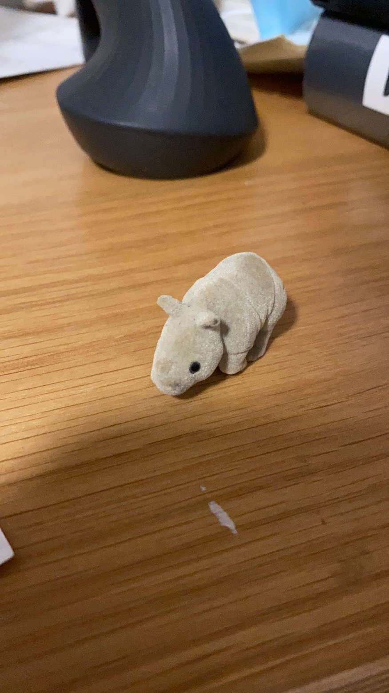

Guiding Questions
Why do lots of people have emotional bond with an specific item?
Inspiration
Last night, I had a meeting with my cc lecture instructor Xin, and I shared my 7 in 7 work with her. When we talked about the project related to object emotion, she shared a story about her that relates to her comfort object-a a teddy bear. She said she had a deep emotional bond with that teddy bear when she was a child. This can be explained as a comfort object-an item used to provide psychological comfort. These items are essential to people, which can give them psychological strength. These objects can be anything that relates to their life experience. It is prevalent for people to carry these items with them. People may seek emotional support from these objects during transition periods, or when they suffer trauma or significant losses, they create emotional bonds with each other.
The idea
After that meeting I started to think about why do lots of people have emotional bond with an specific item? How that bond has been created? I want to hear the story behind it. I collected couple items and storied from my friends:-a blanket-"When I was a kid, I always felt that there was some weird bug between my legs,
I wanted to block that area then I found a blanket to help me defeat those bugs,
until now I am still using that blanket"

-a handkerchief-"When I was young, I afraid to go to the bathroom by myself. My friend gave me a little bear handkerchief, which has a bear head on it. After that, that bear came one of my best friends."

-a rhino toy-"I sent this little rhino toy to a girl, and when she left, she just gave it back to me again; I feel so upset. It is a kind of heartbroken emotion bond"
to be continued...
prototype
I want to keep collecting those comfort objects from other people and recording their stories. After I have a amount of stories, I want to set up an exhibition for them. In that exhibition, I will list these items and tell visitors the stories behind them.The exhibition can be named as "bond"
To-do list
keep collecting stories and items.
Go Back Next day